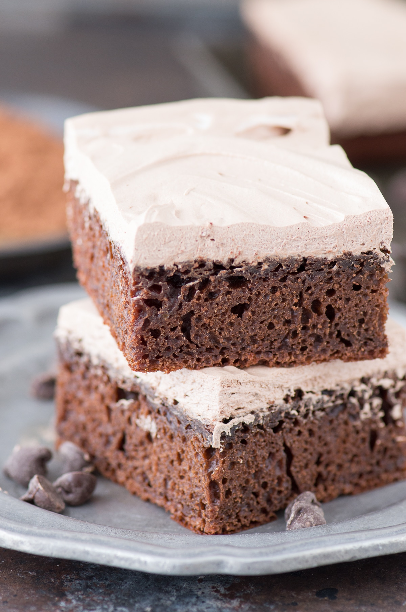

Healthy Chocolate Fudge Cake!
The BEST healthy chocolate fudge cake at 175 calories per piece! No granulated sugar, oil or butter – uses honey and greek yogurt. Plus there’s a healthier frosting recipe that’s only 2 ingredients.
- serving: 9 pieces
- cook time: 30 MINUTES
- additional time: 15 MINUTES
- total time: 45 MINUTES
Ingredients
- 2/3 cup skim milk
- 1 egg
- 1/2 cup honey
- 1 tsp vanilla extract
- 1/4 cup greek yogurt
- 1 cup all purpose flour OR whole wheat flour OR gluten free flour
- 3/4 tsp baking soda
- 4 tbsp unsweetened cocoa powder (sifted)
- 1/4 cup semi-sweet chocolate chips (OR sugar free chocolate chips)
- 1 cup fat free cool whip
Instructions
Cake
- Preheat the oven to 350º F.
- In a mixing bowl, combine the milk, egg, honey, vanilla extract and greek yogurt, whisk together until combined.
- In a separate bowl, combine the flour, baking soda and sifted unsweetened cocoa powder. Once mixed, add the dry ingredients to the mixing bowl and stir until just combined. Small clumps and flour streaks are okay!
- Spray a 8 inch square baking pan with non-stick cooking spray. Pour the batter into the pan and bake for 22-24 minutes or until a toothpick inserted in the centers comes out clean.
- Allow the cake to cool.
Topping
- Place the 1/4 cup chocolate chips in a microwave safe bowl and microwave on 50% power until melted. To help the chocolate melt without burning you can add a very small amount of oil. Allow the chocolate to cool for 5 minutes.
- In a mixing bowl, combine the melted chocolate and cool whip, stir until combined. Spread on top of the cooled cake. The cake can be covered and refrigerated until ready to serve.
I recommend sifting your cocoa powder. Some brands tend to be more clumpy and can leave chunks of cocoa powder in the cake after baking.